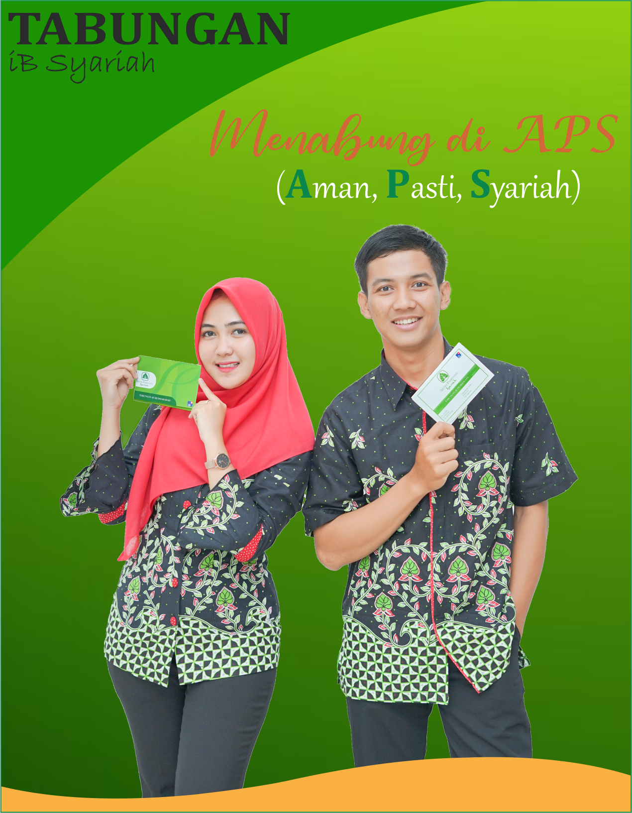

Tabungan iB Syariah BPR Syariah Artha Pamenang

Tabungan Wadiah
Tabungan dengan setoran awal 10 ribu rupiah, saldo mengendap 10 ribu rupiah, gratis biaya admin bulanan.
Tabungan Mudharabah
Tabungan dengan setoran awal 1 juta rupiah, saldo mengendap 100 ribu rupiah, gratis biaya admin bulanan, bagi hasil atau nisbah sesuai prinsip syariah, cocok untuk tabungan investasi.
Tabungan Gaul
Tabungan dengan setoran awal hanya 10 ribu rupiah, tidak ada saldo mengendap, gratis biaya admin bulanan, sesuai untuk kawula muda atau milenial yang ingin menabung sejak usia muda.
Syarat Pembukaan Rekening
- Copy KTP / SIM / Kartu Pelajar
* hubungi kantor BPR Syariah Artha Pamenang terdekat